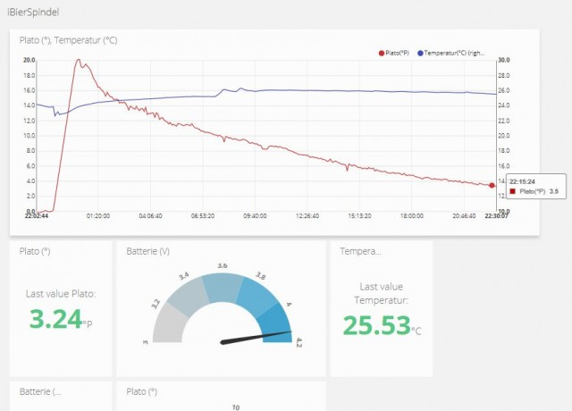
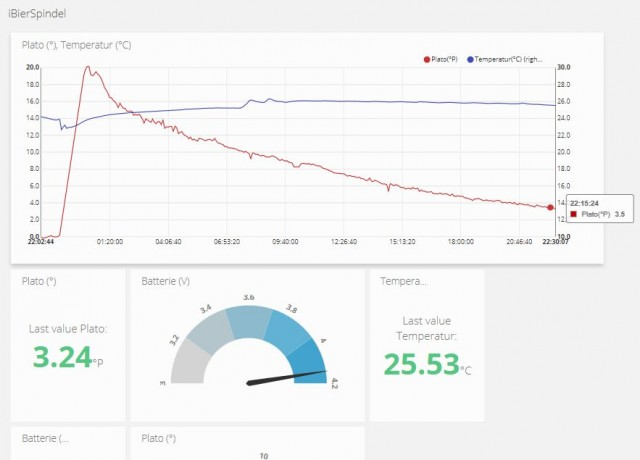
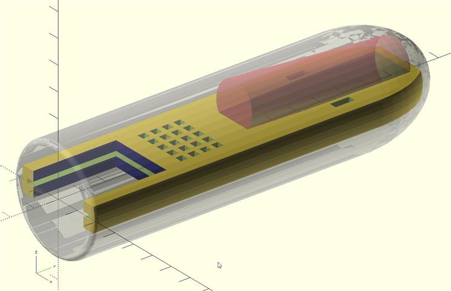
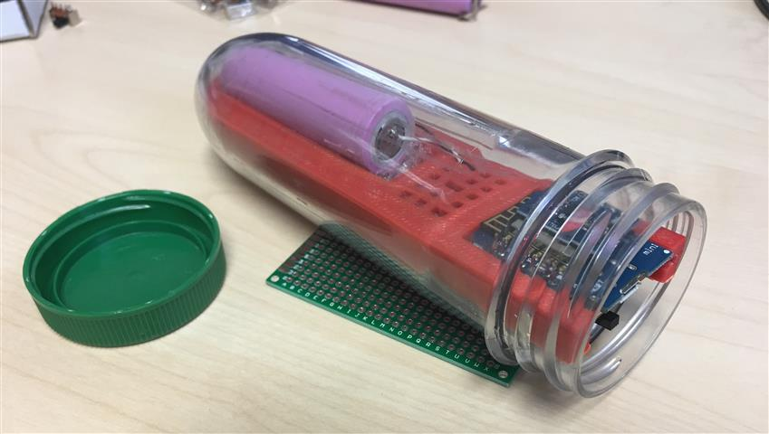
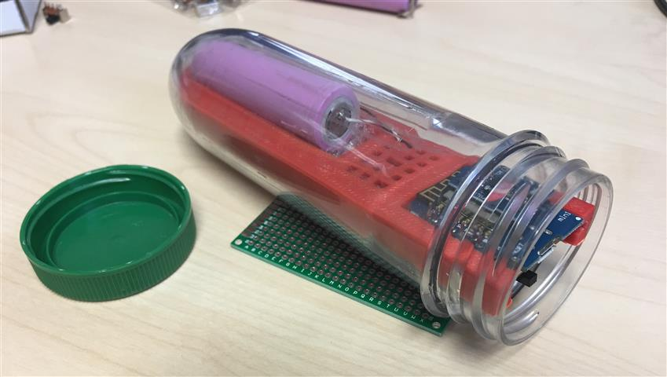
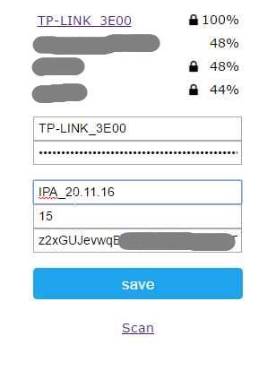

iSpindel | iSpindle
DIY elektronische Bierspindel | electronic Hydrometer https://universam1.github.io/iSpindel
Documentation in other languages
English Documentation (work in progress)
🇺🇸
Nederlandse Vertaling (lopende werkzaamheden)
Please consider supporting this project

News
11.12.16 Sources and drawer online
11.12.16: FHEM upload documentation & firmware (thanks @MSBannert!)
07.12.16: Schematics
3.12.16: Firmware 2.1.2 Wifi improvements
9.11.16: Calibration and Excel sheet for conversion to Plato, SG etc.
The
iSpindleis a pretty new project and under heavy development, see german Hobbybrauer.de Thread. Contribution and support is appreciated especially regarding creation and translation of documentation. Feel free to provide apull request.Die
iSpindelbefindet sich zur Zeit mitten in der Entwicklung, siehe dazu den Hobbybrauer.de Thread. Mithilfe ist herzlich willkommen und Ergänzungen bitte per Pull Request einreichen. Großes Dank an alle die Unterstützung leisten seitens Grundlagen erarbeiten oder passende Hardware zu finden.
 

Inhaltverzeichnis
Lizenz
Jeglicher kommerzieller Nachbau oder Verwendung ist prinzipiell untersagt. Geltende Patente werden verletzt.
All rights reserverd, any commercial use is hereby prohibited and will violate applicable patents.
Prinzip
Angetrieben von dem Thread Alternative zu Spindel wurde die Idee geboren die kommerziell erhältliche elektronische Bierspindel nachzubauen.
Die Idee des krängende Zylinders ist genial wie einfach - man braucht keine externe Referenz (außer der Erde) und der Zylinder ist extrem leicht sauber zu halten. Der Neigungswinkel ändert sich im Verhältnis zum Auftrieb und damit im direkten Zusammenhang mit dem Zuckergehalt. Kein unnötiges Öffnen zum spindeln und evtl. Kontaminieren!

Daher die Idee, ein IoT device mit Wifi zusammen mit einem Beschleunigungssensor und Temperatursensor in einen schwimmenden Zylinder zu legen. Dort wacht er alle bsp. 5min auf, verbindet sich mit meinem Wlan und sendet seinen Neigungswinkel, Temperatur und Akkuspannung an einen Cloudservice.
Metazentrum
Eigentlich dreht es sich hier um das "Metazentrum", der Zylinder wird solange rotieren bis das Metazentrum im Lot zum Auftriebspunkt ist. Diesen Wert messen wir.
Man kann insofern trimmen, dass man am Boden ein paar Gramm hinzufügt, damit stellt sich der Zylinder mehr auf, oder am Deckel, damit krängt er mehr.
In der Software berechnent man aus den XYZ Beschleunigungswerten den Euler Winkel für X und Y und bildet daraus den Absolutwinkel. Diesen verrechnen wir mit den kalibrierten Eckwerten zum °Plato.
Aufbau
ACHTUNG: dies entspricht Stand 20.11.2016
Bauteile
- Wemos D1 mini
-
GY-521Gyro & Beschleunigungssensor (MPU-6050 auf passendem breakout Board) - DS18B20 Temperatursensor
- Lochrasterplatine 3x4cm
- Widerstände
- 4k7 Ohm
- 220k Ohm
- 470 Ohm
- Mikro Schalter
-
18650 LiIo Zelle(z.B.Panasonic NCR18650Bgeschützt oder ohne PCB) - Lipo Lademodul
TP4056(6 pin recommended) -
Kunstoff Schlitten download
- alternativ (Lochraster) Platine UNGETESTED)
-
Kunstoff Zylinder
PetlingPetling-XL
Info
Der Anbieter cachers-world.de unsterstützt dieses Projekt indem er nachhaltig den passenden Petling liefern möchte und über den Gutschein-Code "
HOBBYBRAUER" (Großschreibung!) 20% Rabatt gewährt. Dieser Petling-XL passt zu dem 3D gedruckten Schlitten.Info: "Ist im Moment dann nur 1,44 EUR ab 2017 werden es dann 1,52 EUR sein, weil der Artikel 10ct hoch geht."
Info 2: Zur Zeit ausverkauft, nachbestellt.
Schaltplan
siehe Schaltplan
Schlitten

 


Konfiguration
Ubitdots
- Zu Beginn muss ein kostenloser Account bei Ubidots.com erstellt werden
- Im Menü
API Credentialserhält man seinenTokendurch das die iSpindel die Berechtigung zum Schreiben der Daten erhält.
Diesen notieren.

Portal
Durch mehrmaliges Drücken der Reset Taste erstellt der Wemos einen AccessPoint, mit dem verbunden man die nötigen Einstellugen vornehmen kann.
Die
iSpindelsignalisiert dass sie sich im Konfiguration-Modus druch permanentes Blinken im Sekundentakt.
Man verlässt den Konfiguration-Modus durch speichern seiner Einstellungen, durch betätigen des MenüpunktsStart iSpindeloder durch warten von 5 Minuten. Danach befindet sie sich im Betriebsmodus d.h. sie sendet ihre Daten und geht daraufhin direkt in den "Deep Sleep" Standby Modus. Daher ist sie im normalen Modus nicht erreibar.
-
Der Ubidots
Tokenund die, welche man oben notiert hat, werden nun an dieser Stelle eingetragen.IDs -
Ebenfalls stellt man hier den
Intervallein in dem sie Daten liefert. Dies hat direkt mit der Akku Lebensdauer zu tun. Es empfiehlt sich in der Praxis etwa1800Sekunden (= 30 Minuten) Takt zu wählen.
-
Man erreicht es über


-
Eine Übersicht der Daten kann man über den
InfoMenüpunkt einsehen
Nach dem man obige Daten eingetragen und gespeichert hat, wird die Spindel sich mit dem Wlan und Ubidots verbinden und die Daten übertragen.
Auf der Ubidots Weboberfläche wird man nun unterSourcessehen dass die Daten aktualisiert werden.
Nun kann man imDashboardsich seine Graphen nach Belieben zusammenstellen.
Anzeige
Kalibrierung
Zur Umrechnung von Winkel ° in °Plato, SG, %mas o.Ä. ist es initial nötig eine Referenzkurve zu kalibrieren. Die gewonnenen Referenzen können dann vereinfacht über eine Excel Tabelle in eine Funktion überführt werden, die zur Darstellung hinterlegt wird. Da jede selbstgebaute Spindel andere Messwerte ergeben wird, muss man diesen Prozess einmalig durchführen.
siehe Kalibrierung durchführen
Ubidots Graphen
CraftBeerPi
FHEM
Software
Firmware flashen
Getestet
Compile from Source
Development
The sources represent the current development state thus being untested or at times even broken. Use the provided .bin files for your brew.
Gefällt es dir, na dann spende mir halt ein Bier